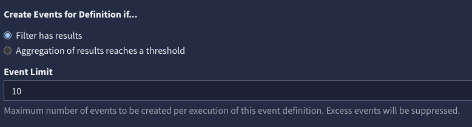
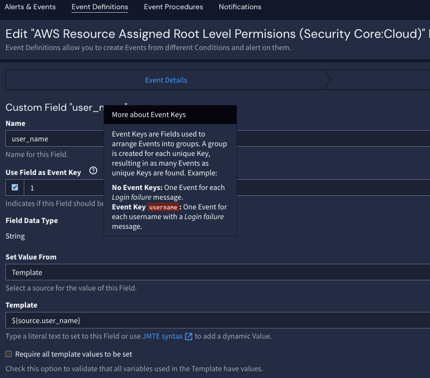

Within an event definition, it is possible to suppress excessive alerts; the behavior varies depending on the alert type. To configure these settings, navigate to the Event Definitions page and edit the desired event definition.
For filter-based alerts that detect a single instance of an event, the maximum number of alerts generated by a single run can be configured. For example, allow an event definition to generate at most 10 alerts in a single search window.

For aggregation-based rules, the number of alerts is determined by the key field; only a single alert will be generated per key during an alert run. Note that only fields included in the group by section of the alert can be used as fields in an aggregation type rule.
